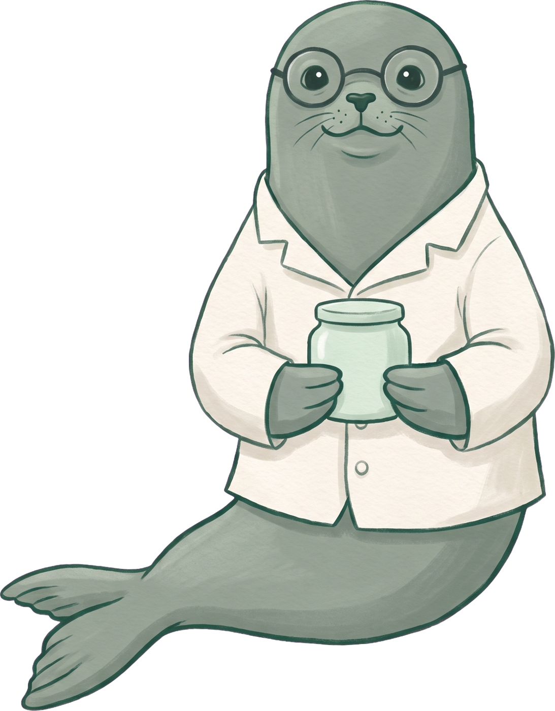
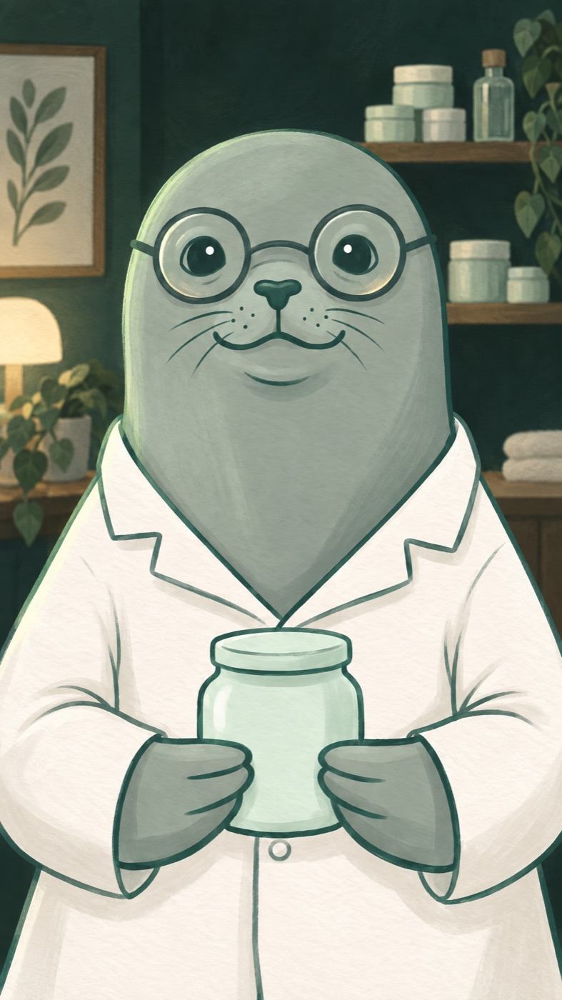
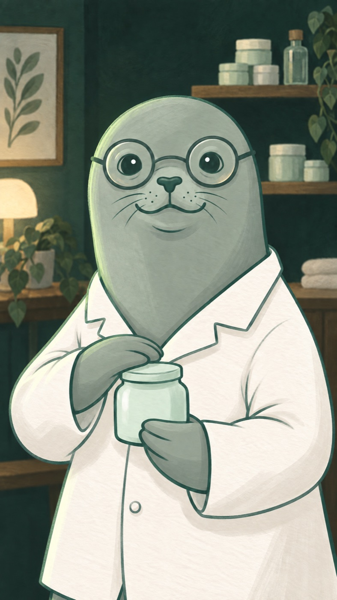
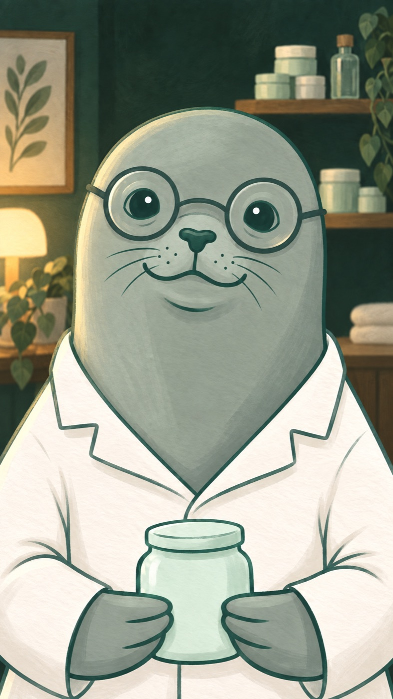
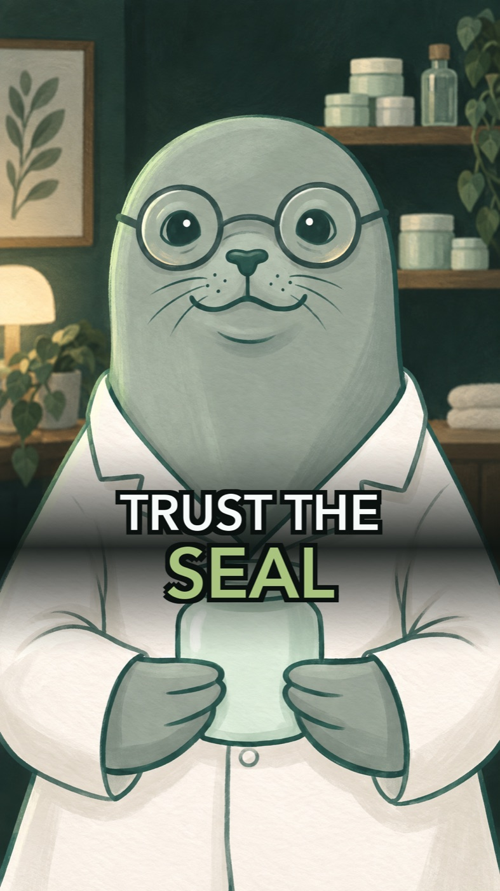

Production diary · locked cut · 2026-09-21
A vertical trailer for sealedskin.com, presented by its own mascot: a harbour seal in a lab coat. Every take that was used and every one that was not: a character recovered from a repository's history, one line read fifteen ways, a probe to find out whether paint survives being animated, and a running argument about how fast a thumb should move.
Forty-four seconds. Snuffy opens it and closes it; everything between is the real site, captured on a phone-sized screen and cut to the sentence being spoken over it.
Below is how it got made, in the order it happened, including the parts that were thrown away.
Trust the seal · published 21 September 2026
Act 1
Snuffy the Cosmetologist already exists. He answers questions inside the app, from a chat attached to every saved routine. The trailer does not invent him; it borrows him.

Act 2
Nothing can move until Snuffy can speak: the animation model takes a voice sample along with the picture. So the first thing bought was one line, read by three candidates.
Skincare might be confusing. I'm Snuffy the Cosmetologist, and I'm here to make it simple for you. Line 1, as edited by Alex
George was skipped on purpose; he is the Werewolf host and Snuffy cannot sound like a wolf. The three below are the bookish one, the dry one, and the safe one. Settings identical for all: stability 0.45, style 0.45, multilingual v2.
Click any take to hear the same line.
Round 1 was the stock catalogue: Daniel the bookish one, Roger the dry one, Eric the safe one. Alex heard them and asked for something more cartoonish, so round 2 went to the shared voice library and came back with five character voices. Simona's read on round 2: Quibble is the lab coat, Dave is the prompt. The verdict is Alex's.
Act 3
Four parts, Alex's structure: what the site is for, how easy it is (three stages of the wizard, shown in action), what you get, and the chat with Snuffy. Every UI beat is a capture of the real app on a phone-sized viewport. Snuffy is on camera three times.
| # | Part | Dur | Picture | Snuffy says |
|---|---|---|---|---|
| 1 | Purpose | 6 s | Snuffy on camera, close, cold open on his face | Skincare might be confusing. I'm Snuffy the Cosmetologist, and I'm here to make it simple for you. |
| 2 | Purpose | 3 s | Snuffy mid shot, taps the jar | Here's how easy this is. |
| 3 | Stage 1 | 4 s | Quiz question, a thumb picks an answer, the 1/7 counter ticks, rail segment fills | Seven questions about your skin. |
| 4 | Stage 2 | 4 s | Concerns photo grid, three checkmarks pop on | Tell me what you want to fix. |
| 5 | Stage 3 | 3 s | Commitment card tapped, review card, Build my routine | How many steps you'll actually do. That's it. |
| 6 | Results | 3 s | Skin analysis card, meters rise; ingredient cards slide in | You get your skin type. And the ingredients it wants. |
| 7 | Results | 4 s | AM steps 1-4, PM steps 1-3 | A morning routine. An evening routine. |
| 8 | Results | 4 s | Product cards, budget / mid / premium tags, prices, sources | Real products at three prices. I checked the reviews. |
| 9 | Chat | 4 s | Profile, chat opens, a question types in, Snuffy replies | Questions later? I'm in the app. I've heard worse. |
| 10 | Close | 3 s | Snuffy on camera, small smile | SealedSkin. Trust the seal. |
| 11 | Title | 3 s | Wordmark, sealedskin.com, Snuffy small in the corner | (music) |
Site facts that shaped this: dark mode by default; a three-segment rail (skin type / concerns / preferences) that fills as you go; the skin analysis lands between stages two and three; results are four screens; the chat is a bottom sheet with Snuffy's avatar in the header and his portrait watermarked behind the transcript. One word banned from the script: "region". The third-stage preference is which country's brands you like, not where you are.
Act 4
The order: one plate (an edit of the reference, close framing, dark pine set), then a cheap 480p motion probe to see whether gouache survives being animated, then the real take.
One edit of the reference, first try. The room is the app's dark mode painted in his own gouache: pine walls, a shelf of jars, a lamp, a plant. Nothing on the shelf is a brand. The jar stays in his flippers because the animation will need something for them to do.

gpt-image-2.5 edit, $0.06. Identity held on the first pass: same spectacles, same coat, same jar. Alex approved it as the scene 1 frame.
The question a probe answers is not "is it good", it is "does the paint survive". Seedance tends to smooth a flat illustration toward a 3D render. Eight seconds at 480p, with the Marcus line as the audio reference so the mouth follows the words.
The paint held, and the probe had one defect: he said "might" twice. Not in the reference line, which transcribes clean; the model regenerates the speech from the reference and stumbled. A re-roll re-rolls the speech too, so the 720p take was the fix as well as the upgrade. Every word once this time, transcription-verified, with the delivery stretched 25 percent over the source as this model always does.
The model choice made itself. Only Seedance 2.5 reproduces the exact words in the exact voice; Seedance 2.0 has a 1080p tier but treats the audio as a style hint and invents its own delivery. So the shot is 720x1280 upscaled, and true 1080p with this voice is not on the menu.
Take v2 approved by Alex as scene 1.
Act 5
Four words and a hand-off: "Here's how easy this is." Then the film cuts to the app. A medium shot so the cut from scene 1 reads as a new angle, and a flipper on the jar lid so he has something to do with the line.

gpt-image-2.5 edit, $0.07. Two references: the character, and the scene 1 plate for the room. A good plate for a shot that got cut: Alex decided the line works better as voice-over with the app already on screen. Kept for the record.
Decision: no second on-camera shot. Snuffy is on camera twice in the film, the open and the close. The line goes to the app instead.
"Here's how easy this is" now plays over the Start screen, and the scene is cut to the length of the sentence: a fifth of a second of the card, the thumb gliding in, the press landing on the last word. No speed change on the picture, so the hand moves like a hand. The first version gave this screen one second inside a sped-up run of the whole quiz, which threw away the only moment the film introduces itself.
The voice is slower here than in the draft. Marcus is a quick reader, so this line was re-recorded at 0.9 of his natural speed. It is the same voice, not a stretched file.
"Seven questions about your skin." The first cut ran three questions and the intro card through one sped-up take. Alex cut it to two question screens and their two selections, which is all the beat has to say. Two seconds, ending three tenths after the last word.
"Tell me what you want to fix." A grid of photographs, the thumb ticking two of them, the counter climbing behind it. The scroll and the Continue press that lived in the original take are gone, so nothing moves except the two things the sentence is about. It runs at natural speed, no acceleration at all, and holds a beat after the second tick.
Marcus went slower again here: 0.75, which is as slow as the voice goes. Asking for 0.70 returns a different file of exactly the same length, so the floor is real. Each scene is now cut to its own sentence rather than to a share of a long take, and the picture speed falls out of that arithmetic instead of being chosen: two question windows measured off the footage, 4.52 seconds of them, fitted to a three second scene at one and a half times speed.
Act 6
Five captures of the real site on a phone-sized viewport, all free. The glowing dot is the thumb. Every hold and every scroll is paced by the capture script, never by the page, because frame grabs run slower than real time and anything the page animates on its own clock comes out time-lapsed.
Raw captures run long on purpose; the cut takes 3-5 seconds from each and speeds the rest. One miss on the way: the chat button reads "DISCUSS WITH SNUFFY" on screen but "Discuss with Snuffy" in the source, and the capture tool matches the source. The first chat take was fourteen seconds of a card doing nothing. The dry register in the reply is a real in-app setting, chosen on camera.
Three beats, three lines, twelve seconds. Each capture is sped up a little over two times so the taps land inside the words: "Here's how easy this is. Seven questions about your skin." over the quiz, "Tell me what you want to fix" over the concern cards, "How many steps you'll actually do. That's it." over the commitment card and the build. The brand-origin and pregnancy screens are cut; the line no longer mentions them. No music yet, no sound on the taps yet. Alex's note on v1: the thumb picked the second answer on every question, which looks scripted. Take 2 of the quiz picks second, third, first.
Act 7
Everything mounted in order for the first time: Snuffy's opening, the three stages, the results, the chat, a title card. At this point it was thirty-seven seconds of voice over picture, with no music, nothing on the taps, and a card standing in for the closing shot. The player below is the finished film rather than that draft; what follows is how it got there.
Checks run on the file, not on the plan: every line transcribed back in order from the finished master; the lines land where the beats start; the reply in the chat appears before "I've heard worse". The white flash on the cut from Snuffy to the app is six frames. The title card fades in from black. The tagline on it is a placeholder.
The first thirteen seconds, re-cut one scene at a time after the draft: Snuffy's opening, the Start screen, two questions, two concern cards. Each scene is now the length of its own sentence, the voice is slower, and the levels are matched by measurement rather than by ear. The spoken lines measured two to six decibels under the opening take, because the model that speaks for Snuffy on camera is louder than the one that reads the voice-over.
"How many steps you'll actually do. That's it." Two sentences, two things on screen: the card where you choose how long a routine you will really keep, and the press that builds it. The brand-origin screen, the pregnancy screen and the review card are all gone. The timing fell out of the measurements rather than being chosen: the tap lands a tenth before the first sentence ends, the press lands on the word "That's", and the spinner starts right after "it" and runs while the film breathes.
The results are three scenes and six sentences, and each sentence owns a screen. The skin type and the ingredient cards. The morning steps and the evening steps. The product prices. Where a scene has two sentences the cut between screens falls in the gap between them, so the picture changes while nobody is talking.
The first version of these three was mostly travel: four scrolls in eleven seconds, the page racing past faster than anyone reads. Alex cut the movement down to one slow move each, and the three screens were shot again for it. The routine screen does not move at all now: there is one scroll position where the morning block and the evening block are both on screen, so the sentence has its picture without going anywhere. The other two hold on one thing, drift to a second, and stop. Because each screen was captured at exactly the length of its line, nothing is sped up; these play at the speed they were filmed.
One thing was lost in the trade. The earlier cut ended scene eight on the row of retailer links and the search chip at the foot of the page, which is the evidence for "I checked the reviews" - the only line in the film that makes a claim. Reaching it meant a long scroll past everything. The sources are still in the app; they are no longer in the trailer.
"Questions later? I'm in the app. I've heard worse." The question is typed, the send press lands on "I'm in the app", and then the film skips the two and a half seconds the model actually took to think. His reply arrives on the word "worse". The tone picker that opens the real chat is cut; the scene is a question and an answer.
The waiting is the only thing in the film that was falsified, and it is worth saying plainly: the reply is real, Snuffy wrote it in the dry register the app offers, but he took two and a half seconds longer to write it than the trailer admits.
Act 8
The closing line settled itself. Asked what to call the video, Alex said "Trust the seal", which was the line the last shot had been waiting for.

gpt-image-2.5 edit, $0.07. Closer than the opening, the jar dropped low, the lamp turned up on one side so the end of the film is warmer than the start.
The first submit of this shot came back rejected with an image error, which is not charged for. The plate was a three megabyte PNG on a public URL, and the opening shot's plate had been larger still and worked, so it read as a passing fault. Converting the same picture to a six hundred kilobyte JPEG and sending it again was enough. That is the cheap first move when a perfectly good image is refused.
The title card that follows him used to say the line too, in his voice, which would have been the same sentence twice. It is silent now and the score carries it out.
Neither of the house palettes fits a film about skincare. One is ceremonial trailer brass built around a braam and a taiko; the other is cold horror synth. So this one is new: a plucked arpeggio in F major at 84 beats a minute over a warm pad, with the bass arriving when the quiz starts and a counter-melody over the results. It strips back almost to nothing under the chat, which is what makes the ending feel like one, and resolves alone on the title card. No impacts anywhere, and no ding, because that sound has become a Werewolf signature and does not belong here.
Everything is synthesised in numpy: three detuned sawtooths for each pluck, the same stack pushed through vowel-shaped resonances for the pad, filtering done by Fourier transform. It cost nothing.
The interface sounds are a separate stem so the two can be balanced without re-rendering either. Their positions are not eyeballed: each one is computed from the edit arithmetic, taking the moment a checkbox fills in the source capture and mapping it through the trim and the speed change to a time in the finished film. Their level was set by differencing the mix against a version with the stem removed, because while a limiter is working a peak measurement cannot see them at all.
Act 9
Shorts are watched with the sound off. The app scenes survive that, because the voice is describing something you can see. The two shots of Snuffy talking do not, and one of them is the opening. So the film is captioned in exactly two places and nowhere else.
Three things went wrong on the way, in order. The typeface collection's fourth face is the italic, so the first pass looked like a festival subtitle. Then every card faded out before its cue, because a looped image input starts its own clock at zero and the fade times had been written as though they were film time; the closing pair never appeared at all. Then the type was too small to read on a phone, because the layout was shrinking a phrase to fit the frame and the longest one dragged its pair down with it. It holds a size and wraps now.
The last correction came from Alex posting the film elsewhere and watching it on his own phone, where the feed cropped the sides and clipped the words. Captions are now held inside the middle 74% of the frame, verified by rendering a still with exactly that crop applied rather than by trusting the margin. The long opening sentence also stopped stacking: the second phrase replaces the first instead of joining it, so there are never four lines of text over his face.
Act 10
Forty calls to three services. The video is three quarters of it and it is three renders: a cheap probe and two real takes.
| What | Calls | Cost |
|---|---|---|
| Video, Seedance on evolink | 3 | $4.64 |
| Voice, ElevenLabs | 34 | $0.93 |
| Images, gpt-image-2.5 | 3 | $0.19 |
| Captures, score, sounds, titles, cutting | - | free |
| Total | 40 | $5.76 |
Two thirds of the running time is a real product filmed for nothing, which is why this cost five dollars and change while a fully generated short of the same length runs to fifteen or twenty. The cover is the one thing made after the film was already public: its first version put the words in the strip where the Shorts interface sits, and its band was too faint for white type over a white lab coat.

Built from the clean plate rather than a frame of the film, so no caption is baked into it twice.